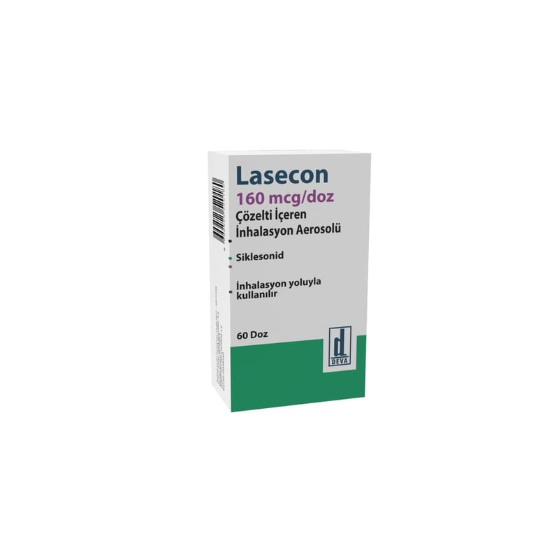

Lasecon 160 mcg /doz Çözelti İçeren İnhalasyon Aerosolü, 60 doz

Ne için kullanılır
KT · Bölüm 1 LASECON etkin madde olarak siklesonid içerir. 160 mikrogram siklesonid içeren alüminyumdan yapılmış basınçlı ambalajda 60 doz içermektedir. LASECON yardımcı madde olarak etanol ve itici gaz içerir. LASECON etki göstereceği yer olan akciğere, ağız yolundan nefes ile alınan, berrak ve renksiz bir inhalasyon çözeltisidir. Her gün kullanılması gereken, koruyucu bir ilaçtır (kortikosteroid). Etkisini sadece akciğerde, nefes yolu ile alındıktan sonra göstermek üzere tasarlanmıştır. Bu ilaç, astımın tüm basamaklarında iltihabı gidermek, solunum yolunu genişletmek, belirtilerin kontrolünü sağlamak ve oral steroid (solunum yolu hastalıklarının alevlenmesinde kullanılan ilaçlar) ihtiyacını azaltmak amaçlı reçete edilmiştir. KOAH’ta (Kronik obstrüktif [tıkayıcı] akciğer hastalığı) tek başına kullanılması önerilmez. LASECON nefes darlığı gibi astım belirtilerini ve astım atağı geçirme ihtimalini azaltarak daha rahat nefes almanızı sağlar. LASECON’un koruyucu etkisi zaman içinde gelişir. Bu nedenle kendinizi iyi hissetseniz bile ilacı kullanmaya her gün devam etmelisiniz.
Bu ilacı kullanmaya başlamadan önce bu KULLANMA TALİMATINI dikkatlice okuyunuz, çünkü sizin için önemli bilgiler içermektedir. Bu kullanma talimatını saklayınız. Daha sonra tekrar okumaya ihtiyaç duyabilirsiniz. Eğer ilave sorularınız olursa, lütfen doktorunuza veya eczacınıza danışınız. Bu ilaç kişisel olarak sizin için reçete edilmiştir, başkalarına vermeyiniz. Bu ilacın kullanımı sırasında, doktora veya hastaneye gittiğinizde doktorunuza bu ilacı kullandığınızı söyleyiniz. Bu talimatta yazılanlara aynen uyunuz. İlaç hakkında size önerilen dozun dışında yüksek veya düşük doz kullanmayınız.